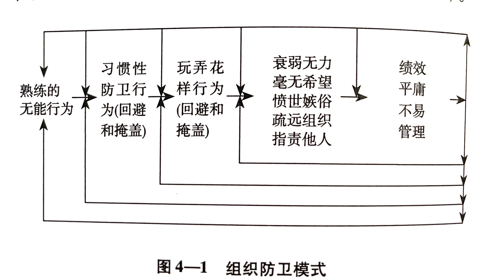

前言
5 在一个具有防卫行为的组织中，组织成员的士气、满意度和忠诚度有可能很高，因为他们可以 若无其事地躲避承担组织去的最佳绩效的责任 。
6 我们已经认识到。为了使组织实现卓越，学习、能力和公正是比士气、满意度和忠诚度更为现实的基石。学习作为第一基石，决定了如何发现错误并改正错误，尤其是那些复杂的、令人困窘且有威胁感的错误；能力则意味着以某种方式解决问题，这种方式解决了的问题不再出现，并且还有助于提高组织解决今后问题的能力；而公正则是以一套价值观和规则为基础，这里是指保持组织健康的价值观和规则，对于组织所有员工而言，无论其职位高低皆人人适用。
7 人们通常没有动机去做那些并不希望发生的事情。但是，在他们故意犯错的时候就将自己陷入这样一种进退两难的困境中。故意犯错是导致效率低下的根源，然而在我们以某种方式建立的组织结构中，故意犯错却是人们生存发展的必要条件。 这是一个悖论，不利于提高组织效率的事情却有利于组织成员的生存，结果就导致在组织中生存越来越依赖于浅薄的学识、平庸的能力以及不甚公正的判断标准。
. 如果人们为了提高在组织中的生存能力又不想驳组织决策者们的意而学会了掩盖，那么他们很快就会认为这些行为是必要的、可行的、现实的，甚至是为领导考虑的。一旦出现这种现象，他们便不再去探究故意犯错的根源。事实上，我们将会看到，他们甚至不会再去思考或留意这个问题。而践行者对此就会变得不再敏感，甚至视而不见，而且对他们的这种不敏感和视而不见熟视无睹。
8 既然这种做法有悖于正式的管理理念，那为什么它们还会发生呢？对此有两种解释。一是个体在这样做时并没有意识到他们是在犯错；二是就算个体知道自己在犯错，他们也会想方设法使所犯的错误看上去并不是一个错误。
熟练的无能行为 . 而且，正如我们将要看到的那样，个体总有一些理论用以指导自己如何有效地采取行动来对正在犯的错误熟视无睹。他们学会了熟练地采取行动，其结果就是变得无能。
组织防卫行为 . 对于第二种解释的可能性，则是为了避免让组织决策者感到不安或者受到威胁，而采取的组织防卫手段，但是这种理由必须加以隐藏。承认必须将自己的困窘加以掩盖或者不让自己受到威胁，这一行为本身就令人困窘或面临威胁。
9 我们从中可以了解到，这支以斯托克曼为首的团队是如何从感到恼怒并怀疑内个无法正视战略实施问题，而发展到回避问题并对回避行为加以掩盖的。回避和掩盖的做法已经发展到被认为是理所当然的地步。
10 这种现象正在演变成大规模的地下管理活动。
. 而且对于那些提出建议者，他们并未意识到自己反倒助长了这种地下管理活动。
11 如果产生问题的原因被回避和掩盖，并且还不能对此加以讨论，如果这些问题因此而变得难于处理，那么在日常的工作中我们就不可能找到如何解决这些问题的实例。 找出产生问题的原因并分析这些问题是如何被掩盖起来的，这一行为本身就是一个积极的贡献。
第1章 困惑
2 换言之，我相对那些大家目前做起来已经非常熟练的行为叫停。要想达到此目的，其中一个办法就是指出那些深置于熟练行为中未被意识到的困惑、矛盾、尴尬和似是而非。
. 如下是现代管理的三项主要活动：
- 私营组织董事会或公共组织相应机构的管理。
- 变革组织使之更具竞争力。
- 在生产产品或提供服务的过程中提高质量并降低成本。
我以这三种活动为例，不仅因为它们是大多数组织最为关心的事情，还因为他们能够说明在这些活动中存在着4种重要的令人困惑的现象：（1）带来成功的活动同样也会造成失败；（2）成功会掩盖失败；（3）在所有者三种活动中，成功的标准并非严格到足以解决困扰中任何组织中各级管理者的问题；（4）在所有这三种活动中，组织决策者并没有找到产生问题的根本原因，他们解决的只是表面问题。可他们却不这么认为，而且还意识不到这是在自欺欺人。
3 我想说明的是，在管理层构建的组织中，人们学会了以某种方式解决表面问题，这种方式掩盖了肤浅的组织学习过程。
. 这些困惑表面，过度保护、不利于组织学习能力以及意识不到这种现象的存在，在组织中已根深蒂固。而且越是当组织需要学习能力的时候，也就是当问题比较棘手且会给人以威胁感的时候，就越是如此。
4 例如：
| 董事会成员们如此说 | 洛尔施和麦基弗写道 |
|---|---|
| 他们可以畅所欲言 | 即使对某些事情不满，他们也很少在董事会上直截了当地提出批评，而是 采用外交辞令，拐弯抹角地予以批评 。 |
| 他们很认真地履行其职责。他们与公司CEO以及彼此之间的关系良好。他们认为自己不是好愚弄的。 | 在很大程度上，董事会成员相互之间并不就指责问题展开讨论。CEO通过确定会议议程来控制董事会。 这样的控制方式很少在董事会上展开讨论。 |
| 董事们根本没有足够的权力来履行他们所承担的职责，而且他们对这种现象 听之任之 。 | |
| 实际情况是，董事们对提出自己的反对意见并不热衷，而当他们要这样做时，往往现在董事会之外提出来，然后再拿到会上来讨论。 |
5 对于这些疑问有一个答案就是，在董事会上可能存在着公开的和非公开的制约力量。公开的制约力量用来解决日常问题，而当遇到比较棘手或者会带来威胁感的业务问题时，非公开的制约力量就会起作用。
. 在那些探讨如何成为一名优秀的董事会成员的资料中，我没有找到任何有关如何产生并保持、甚至加强这种非公开制约力量的建议。
. 一方面他们认为这些制约力量没什么作用，另一方面又认为它的存在理所当然。这种现象违背了董事会全体成员的管理职责。
6 通过深入分析，他们发现是由于某些政策和做法所致：
- 规则制定得不灵活，缺乏应变力。
- 管理者和员工不了解客户需求。
- 管理者工作不尽责、不合作，没有变革能力。
- 职能部门之间缺少沟通。
- 高层拒绝承认效益和市场份额低并不是一种短期的波动现象。
- 缺乏战略思维。
- 基层员工并没有充分掌握信息。
- 信任度低。
. 比尔、艾森施塔特和斯佩克特还指出，大多数旨在对组织进行变革的计划要么归于失败，要么取得的成功极为有限。
7 其中许多都是按照现有的思想来制定的，而这些思想与组织的现实情况联系并不紧密。大多数变革计划在制定之初就想取得立竿见影的效果，从而将重点放在解决表面问题上，而不是追根溯源，从根本上加以解决。
既然如此，那一开始为什么要制定这样的变革计划呢？因为有些公司总是效仿别人的做法。这样做出来的计划易于被基层所接受，而执行这样的计划又能迅速取得让高层称赞的效果。
9 他们回避产生问题的根本原因，认为面对现实就是把问题简单化。 他们还避免对这些行为加以公开讨论，最终营造出一种组织换届，在这个环境里坏的东西总是好的东西如影相随，这样后者就能为前者撑起一把保护伞。
七种具有普遍性的错误做法
. 这七种做法之所以被认为是错误的，是因为它们违背了正确的管理原则。
1. 那些旨在加深了解和增强信任的举动实则是在造成误解和不信任
10 他们推断，最终的原因还在于，下属们不愿与他人发生争论，一来是缺乏勇气，而来是相互之间缺少信任。
. 下属们对这些解释的真实性持怀疑态度，在他们看来，收回他们的参与权是因为CEO发现真要参与决策会使自己面临威胁，而下属们也很少去证实这些解释的真实性。
2. 因为错误的决策而指责别人或组织体制 11 一旦出现重大错误，人们往往会从别人身上找毛病（把脏水泼到别人的院子里），或者归咎于组织体制方面的原因（像循规蹈矩或按图索骥等）。人们常常采取欺骗、耍政治手腕等手段来掩盖事实真相（或蒙混过关），并坚持说没人有兴趣去反思组织政策。他们认为，如果事实真相复杂且令人不悦，甚至会威胁到某些人，那么息事宁人比追根究底更为重要。
3. 组织惰性：一切都要墨守成规 . 新的思想和观念会给某些人带来威胁。这些新思想、新观念在组织中被一些忠告或建议所扼杀。
. 还有一种阻止对具有潜在威胁的真相进行探究的做法，就是佯动。也就是当问题出现时，让别人确信自己正在采取行动加以解决，而且正在就此写出报告。
4. 向上级汇报棘手问题总是拖延 12 向上级汇报有关员工的态度、期望以及生产方面的问题，就犹如掉进百慕大三角区一般，石沉大海。
掌管这个"三角区"的管理者，既不重视报上来的情况，也不懂得情况了解得越多就越有助于提高产品的质量、数量以及提高生产效率。
管理者要么认为他们的老板对员工所关心的问题不感兴趣，要么认为那应该是工会或人事部门负责的事情。
5. 玩弄预算成为必不可少的手段 13
- 夸大其词：真正的本领不是对那些难以证明的事情做保证，而是对那些无法证明其错误的事情作保证。
- 两头下手：使两方相争，自己坐收渔利。
6. 人民网往往不是理智行事，即使对他们最为有利的时候也是如此
7. 管理团队常常是一个神话 14 彼得弗洛因德（Peterfreund）认为，许多组织的领导者在谈话中不断提到"我们的管理团队"，然而根本就没有什么"管理团队"。这不过是一个神话，一种传说，而不是现实。
更多困惑
14 事实上，正如我要指出的，人类的悲剧是这些错误产生并强化的根源。
15 所有这些例子以及困惑产生的根源在于：在许多组织中，各级管理层按照其意愿营造出一个环境，这个环境与他们嘴上表示各种希望营造的环境相反，与他们拥护的管理原则背离。给人的感觉好像他们迫不得已而为之，使他们无力改变那些本应改变的东西。 如果事实的确如此，那么从根本上来说，管理层就没有起到管理的作用。
我相信这些推论是正确的。管理层营造了一个这样的环境，这种环境可以改变 。
防卫性推理
15 . 只要组织或个体能够按照自已的意愿行事，但其所采取的行动又不符合自己的利益，，那么这样的行为一定是防卫性推理在作祟。
当人们面临如下几种情况时，就会进行防卫性推理：（1）对所怀疑的事情持肯定的假设，但事实上他们并不认为如此；（2）并没有完全按照这一假设推理，但他们却认为如此；（3）认为得出的结论已经经过仔细验证，但事实并非如此，因为按照防卫性推理得出的结论是根本无法验证的。
16 高管之所以会采取这种防卫性推理，尤其是面临令人困窘或具有威胁感的业务问题时，究其原因主要有4个方面：（1）高管的头脑中存在着一些既定指令，用以指导他们处理令人困窘或有威胁性的问题；（2）对这些指令他们运用娴熟；（3）习惯性组织防卫行为使然；（4）组织为保护习惯性防卫行为而玩弄花样。
第2章 人性控制论：熟练的无能
19 所谓窘境，是指以人在给他人面子时，却不能对这人说我这是在给你面子。如果你说"我是在给你留面子"，那你实际上是不给人留面子。给人们面子需要刻意地去撒谎，也就是所谓的善意的谎言，同时还要对这种善意的谎言加以掩饰。
防卫性推理及行动为何令人疲惫不堪
21 这群人都是公司高层的管理者，他们相互尊重、责任感强，认为早就应该制定发展蓝图和做出战略决策了。但是，他们为此召开的会议却屡屡失败，既制定不出发展蓝图，也做不出他们所需要的发展战略。
按照本书开篇所讲的衡量一个人是否无能的标准来看，这些高管们的行为就可以看做是无能的表现，因为他们的行为没有取得所希望的结果，而且在没人强迫的情况下，依然不断重蹈覆辙。
高管对所遭遇困难的解释 . 一开始，这群高管认为，他们之所以未能制定和实施一个可行的战略，其原因在于没有充分的财务数据。于是，他们聘请了一位财务高管，大家一致认为其工作相当出色。
22 这位财务副总裁反映说："我们的问题并不是缺少财务数据，我可以提供大量的数据。我们缺少的是对公司愿景以及公司战略的构想。一旦我们有了构想，我就可以提供必要的数据。"其他高管勉强同意了这种说法。
于是对此有了第二种解释，这种解释与与会者的个性以及他们在开会时相互沟通的方式有关。
正如该公司CEO所说：
这是一群可爱的家伙，他们的自尊心和好胜心很强，聪明、坦率、敬业。但我们在一起开会时似乎总会陷入一个怪圈。我们非常善于指出别人的错误，或者而别人该如何解决问题，但是自己却不愿意做出一丁点的让步或者必要的妥协。
虽然不同的解释：不能实现目标的根源在于熟练 23 也就是说，他们的动机是好的，他们也在竭尽全力地实现目标。如果这就是竭尽全力所能取得的最好结果，那他们表现出来的行为就是在瞬间发生的，是一种自发的、下意识的、毋需事先演练的行为。然而，即使这些行为达不到预期目标，他们依然会坚持这样做。部分原因是为了彼此之间不伤和气，也正是这些行为阻碍了制定战略所需决绝的那些重要的思维问题。 所以，那些回忆最终只能以列出一串亟需待解决的问题了事，根本形不成任何实质性的决议。
24 但是，我们将会了解到，人们在脑子里思考的尚不愿意公开的问题往往都有比较重要的影响，因为他们不仅要掩盖脑子里并非这样想的，而且还要尽力使这种掩盖行为不为人所知。 具有讽刺意味的是，其他与会者能够感觉到这一点，但是他们也不希望别人察觉出来，因而也加以掩盖。
反思这些案例 26 高管们发现，每个人都将无法达成一致意见的责任归咎于对方，而且双方找出的理由都相同。
.
"你对问题根本就不了解"
"如果你坚持己见，就会使我们高昂的士气低落。"
"别岔开话题，你知道我在说什么。"
"你为什么不能跳出自己的小圈子，从公司的角度来考虑问题？"
"我一想到他们对问题的看法就你难受。"
"我真的在努力，但我开始感到根本就无望。"
27 在措辞上，既不想让别人不高兴，又想劝说他们改变主意所需要的技巧。但是，从这些案例可以看到，这些熟练的行为不仅没能使他们打到自己的目的，结果反而适得其反。他们的一番言谈不仅让对方感到不快，而且还促使对方愈发坚持己见。
社会道德
28 社会道德包括：（1）关心他人、帮助他人和支持他人；（2）尊重他人；（3）诚实；（4）坚定；（5）正直。
30 一方面，他们的动机似乎很好，态度诚恳，也能考虑别人的想法；另一反面，尽管他们的行为使人们相信所有一切都是真实的，但正是这些行为阻碍了一些困难的选择做出决定。
. 人们很快就会感到失望，并失去冷静。于是，他们就表现出自己坚定和正直，坚持自己的立场以赢得胜利，而且决不放弃这一原则。他们的态度非常坚决，不让自己有丝毫的动摇。结果大大降低了决策的效力，也降低了他们对这个问题的群体的信心。
这个"关心——正直"周期是：开始时表现出关心他人、支持他人和尊重他人；如果这些都不能奏效，就表现出坚定和正直。在这种情况下，最终一锤定音的往往是那些权力最大者或者敢说敢做的人。
由此而产生的影响会在组织中蔓延开来。员工们听书了这些内情，即他们的高管在会上有的吵吵嚷嚷、大喊大叫，有的不到万不得已三缄其口，他们就会利用这些事实来解释工作为什么没有进展，以及为什么过于强调自我是不可能取得什么进展的。一些基层员工，通常是那些能力比较强的员工，会远离这些纷争，是自己能够做点事情。他们甚至可能会私下里与另一方（当然也是基层员工）协商，以使组织的生产力能够得以保持。这些行动通常是隐蔽的，因为如果传到上头去，可能会加剧上层管理者之间的纷争。而这又会反过来使基层员工更加意识到，要使组织正常运转，他们必须与上司保持距离。
结论
34 人类持有两种行为理论，一种是信奉理论，其内容包括信仰、价值观和人生态度；另一种是实用理论，也就是人们在实际行动中所使用的理论。
第3章 习惯性组织防卫行为
38 所谓习惯性组织防卫行为，就是为避免组织成员、组织各部门陷入尴尬或者面临威胁之境地的行为或策略。习惯性组织防卫行为不利于组织学习，是一种过度保护和自我封闭。
习惯性组织防卫行为最常见的做法就是使用含糊不清、模棱两可的话语。
39 人们告诉我们他们的一些想法和建议，而我们的回答却是："这是一个很有趣的想法。"当我们对某个想法不感兴趣或者反对，但又要表现出想给予支持时，就会常常使用" 有趣 "这个词。
. 克尔（Kerr）列出了高管保持"正直"的几条准则。这些准则包括：（1）说实话；（2）遵守法律；（3） 避免含糊 ；（4）关心别人；（5）不受腐败的影响；（6） 价值观与行为表现相一致 。
40 所有这些习惯性组织防卫行为都基于一个强大的、对组织和个人产生深远影响的逻辑，这个逻辑就是：
- 巧妙地运用一些有多种解释的话语。
- 说这些话时要表现得若无其事。
当人们在交谈中使用这些含糊的话语时，他们通常都很自然，根本看不出他们是在有意使用。事实上，如果他们在说这些含糊话时犹犹豫豫，反倒会被人认为是一种缺点。
- 使话语中的模糊性或多义性成为不可讨论的内容。
41
- 对这种不讨论现象也不要加以讨论。
人们无时不在遵循这些规则。
. 矛盾之处就在于，这种熟练性不可避免地与 无能 交织在一起，因为，正如我们在下一节所要讨论，熟练地运用含糊话语导致许多意料之外、适得其反的效果。
习惯性防卫行为导致矛盾和两难的困境
. 讨论上司模棱两可的话语令人 尴尬 ，公开核实对上司意图的揣摩会更加令人 尴尬 。部门经理为此感到进退两难：一方面，如果他们不加怀疑地遵照公司高层的意见行事，他们可能会失去自主权，其下属就会认为他们对公司 没有 什么影响力；而另一方面，如果部门经理不执行公司高层的意见，那么总部可能会认为他们在 违抗 总部的意志，而且如果长此以往，总部会认为他们对公司 不够忠诚 。
42 而公司高层也同样面临着进退两难的境地。他们觉察到，部门经理不仅怀疑他们的动机，而且还将其加以 掩盖 。如果高层管理者对下属的这些行为加以指责，显然会令下属感到不高兴；但如果高层管理者对此缄口不言，那么就可能会让人认为他们全力赞同下属的做法，而事实却并非如此。常见的做法是，高层管理者为了保持良好的关系也选择将这种情况 掩盖 起来。
不用太久，部门经理也就学会了"带着脚镣跳舞"，继续揣摩上司的意图。
. 由于这个结论认为公司采取的是掩盖做法，那么部门经理也不会对他忙的揣摩加以核实。因为无论是总部还是部门经理，对工作中取得的成绩或受到的挫折都不会公开讨论，所以双方最终可能会越来越疏远，从而形成互不信任的气氛。这种气氛一旦形成，就更不可能对那些问题加以讨论了。
习惯性组织防卫行为的反应
43 第一，诚如高管们所述，习惯性组织防卫行为普遍存在，而且是由一些根深蒂固的情感问题造成的，那么许多高管都一定具有 自卑心 和 焦虑情绪 ，我并没有任何证据证明大多数高管存在有这些心理问题。
第二，最重要的是记住，大多数组织文化都有利于 滋生 这些习惯性防卫行为，因为这些行为 表现 出一种对人的 关心和体贴 。
. 一方面能表现对对方的支持和关心，另一方面能最大限度地减少对对方的伤害或者招惹对方不愉快。
44 第三，我们已经能够帮助高管改变习惯性组织防卫行为，无需涉及诸如焦虑、深层心理防卫之类的问题。
应对威胁的规则使得对习惯性防卫行为束手无措
. 据我所知，如果对某一问题不能讨论，而且对这种不能讨论的现象也不能讨论的话，那么这个问题就根本 不可能得到解决 。
. 结果是，保护和强化习惯性防卫行为的人正是那些不希望发生这些防卫行为的人 。
45 人们的防卫行为也具有 自我实现 和 自我封闭 的特点。说人们在防卫方面具有自我实现的特点，是因为是他们创造了一个与防卫行为开战会让人觉得很天真且也很危险的环境；说他们具有自我封闭的特点，是因为在他们创造的这个环境中想要打破自我实现的预言是不太可能的。
因此，组织在防卫行为方面之所以表现出顽固不化，最重要的原因就是防卫行为越来越重，而 对此负有责任的人却被认为改变防卫行为是不现实甚至危险的 。
对习惯性防卫行为及其周遭的反应
46 面对令人无能为力的习惯性防卫行为，一个办法就是采取 愤世嫉俗 的态度，而这种态度又会令人对这种现象更加悲观和怀疑。
. 从愤世嫉俗地对待产生的问题发展到为此而责怪他人或组织，这只是向前迈出了一小步。但是 人们将会看到，有许多证据表明 应该 有人为此承担责任。因为他们能够发现这些防卫行为反复不断地上演，人们不断地采取这样的行为和掩盖措施，而且他们也能够发现 常常是对这种现象采取回避态度的人得到 升迁 。
47 所以，面对这样的问题，人们一开始感到无能为力并采取愤世嫉俗的态度对待它，然后指责他人应该对此负责，再往后发展救护采取一种积极一些的态度，劝告他们不要干涉这种反复上演的习惯性防卫行为。正是这种现象使得人们很难采取措施，也很难以积极的态度对待组织活动。
52 但是，人们认为应该为发生这些防卫行为负责的人不是自己，错误在其他人身上。这些在遇到问题时采取回避并加以掩盖的做法要不了多久就成为了人们的第二本能。
. 斯托克曼在反思这种现象时承认，他们当时留意到了人们如何不负责地采取一些行动将某些问题隐藏起来，以及在没有充分事实依据的情况下，为政治上获得好处就制定出一些短期政策。
. 在时效要求非常紧急的情况下，为了在有纷争的问题上达成一致意见，双方展开了大大小小的斗争，他们的挫折感和失落感越来越严重，而由此产生的影响也在逐步加深，很快就会达到饱和点。
54 他和我们中的许多人一样，缺少的是 认识 我们自己表现出的熟练的无能现象的智慧，缺少的是 了解 我们使之形成或加强的习惯性防卫行为的智慧，缺少的是 了解 我们最终的那种无助无望的感觉以及我们以争取实现某些重要目标或构想的名义而生活在自我欺骗之中的智慧。
. 很快他就能发现任何一个聪明、诚实的人都会发现的事情，即他已经开始无意识地欺骗自已、蒙蔽他人、进行防卫性推理以及把重点放在布局争论性因此也不重要的问题上。他意识到了为了实现自己的目标，他的行为对于他在与之搏斗的环境实际上是起到了推波助澜的作用。
57 换句话说，当事人掌握着必要的信息，但是却没有进行分析和讨论。原因之一可能就是在许多组织中都存在的这样一条规定，即由于职责分工而带来的意见分歧应交由上一级部门来进行处理。因为两个人都没有开诚布公地与对方讨论彼此间的不同意见，也就意味着没有理由将意见分歧报告给上一级部门。两个人都清楚，如果出现任何问题都与自己无关，因为他们的所思所行完全符合部门的管理要求。
结论
64 由于习惯性组织防卫的存在，个体、群体、群体之间以及组织极有可能发现不了、也纠正不了那些令人尴尬和感受到威胁的错误，因为习惯性组织防卫行为的基本规则是：（1）回避错误并且表面上掩饰得若无其事；（2）使得回避行为成为不可讨论的内容；（3）不能对这种不可讨论性进行讨论。
65 有这些情况的存在，向习惯性组织防卫行为开战以终止和减少这些行为是非常困难的。实际上，正是向习惯性组织防卫开战的努力反倒激活和加强了习惯性防卫行为，从而又使习惯性防卫行为得到了强化和扩散。
个人对于改变习惯性防卫行为感到无能为力至少有两个原因，其一是由于所用的解决办法似乎使这种现象变得更加严重，因此他们感到改变习惯性组织防卫行为毫无希望；其二是他们不想被别人看做是打开"潘多拉盒子"使情况变得更加糟糕的人。
第4章 玩弄花样行为和衰弱无力现象
组织衰弱无力
92 组织衰弱无力的症状表现为：（1）寻找和发现组织存在的问题，但却不承担改正问题的责任；（2）夸大负面因素，贬低正面因素；（3）信奉人人皆知却无法践行的价值观，而在行动中表现得好像这些标准能够得到实行一样。
结论
96 在人类的一切组织中，包括家庭、私有和公共组织、工会、自愿者组织以及大、中、小学，都普遍存在着组织防卫模式（参见图4-1）。
第5章 权威建立令问题愈加复杂化
107 总而言之，这些人给出的建议非常抽象，没有告诉读者怎样去实施。比如只是说，如果人们只谈及现在，那么让他们谈谈未来；如果人们在陈述某一问题时表现得不清楚，就叫他们表述清楚；如果人们办事没有准则，就叫他们要按准则办事。
108 任何一个建议在讲出来时都带有抽象性，因为它是人们大脑抽象思维的结果。问题的关键在于要把这些抽象的建议与实际行动明确地联系在一起。
会强化故意犯错和习惯性组织防卫行为的建议
113 人们常常会以追求更完美的东西，为自己只完成部分分配给自己的任务而追求工作以外的东西找借口。两位作者对此给出的建议是："通过对人们在追求所谓完美的过程中所获得的好处与所付出的代价进行分析，把这一问题的讨论从情感层面引向逻辑层面，强调在一个资源匮乏的环境中并非人人都能得到应得的东西。"
借助在组织范围内进行调查提出建议
130 但是，最高委员会常常发现，在其成员看来，提交给他们的建议往往都表述不清、含糊其辞、前后矛盾，有的根本无法加以实施。
第6章 减少组织防卫模式
以案例为介入工具
153 可是，正如我们看到的，人们选择的审查内容影响很大，因为人们不仅要掩盖他们正在对某些内容进行审查，而且要极力掩饰他们的掩盖行为。具有讽刺意味的是，其他成员对此有所感觉，但是也装作不知，而且表面上也加以掩饰。
重新制定行动方案
155 高管开始体验到如何相互支持和帮助。他们开始明白，例如他们对他人之所以收缩战线以提高竞争力的归因分析是正确的，但是也开始明白有些问题归结于不可讨论和不可改变是错误的。
新实用理论
156 人们之所以收集信息是为了决策依据尽可能充分。可利用的有效信息越多，决策基于最佳信息的可能性就越大。
. 制定行动策略的目的有二，一是为了倡导自己的主张和鼓励人们对此提出质询或者验证其正确性；二是最小限度地保留情面。为了达到第一个目的，通常必须要开诚布公地表明自己的观点，同时还要利用相对来说直接获得的证据加以说明，比如人们的说法等。这样人们才能够理解你提出如此主张的前提是什么，从而使你的主张阐述得更加明确，以便是自己或他人对其进行审视。
第二个目的是要最大限度地减少单边保留情面的行为。决定给对方留情面是不信任对方能力的做法，要这样做必须经过验证，否则就是自以为是。有时候检验结果确实使我们得出他人可能会受到极大伤害的结论，此时再直言不讳便不合时宜。
II型社会道德
159
| I型社会道德 | II型社会道德 |
|---|---|
| 肯定和赞美他人；说你认为能使他人自我感觉良好的话；通过告诉他人你的重视来减轻他们的受到伤害的感觉；如果可能，同意他人不恰当的说法。 | 通过以这种方式对待他人，提高他人正视自己思想的能力、开阔思路的能力以及面对暗藏的假设、偏见和畏惧的能力。 |
| 顺从他人，不正视他人的推理和行为。 | 归因于他人具有自我反思能力和自我审视能力，不会因为恼羞成怒而变得不计后果或者丧失自我责任感和辨别能力。始终在检验如此归因是否正确。 |
| 为了胜利倡导自己的主张；面对大肆宣传自己的立场；有脆弱感是软弱的表现。 | 倡导自己的主张并兼顾质询和自我反思的结果；有脆弱感是坚强的表现。 |
| 不对他人撒谎或者和盘托出自己的想法和感受。 | 鼓励自己和他人说出知道却不敢说的事情；将那些否则便会被歪曲并被掩饰的事情减少到最少。 |
| 坚持自己的原则、价值观和信仰。 | 以恳请并鼓励他人提出质疑的方式，宣扬自己的原则、价值观和信仰。 |
在双环学习型组织中达到的效果
168 高级专家们认为他们必须立刻：
- 明确不同专业岗位的职责，使每个人都知道自己和他人的职责。
- 制定规章制度和组织结构，这是保持每个人的绩效具有稳定性、可靠性和可预测性的基础。
- 采取更有效的评估程序对每个人的绩效进行评估。
- 营造更加开放的环境以监督新的组织结构和规章制度的贯彻执行情况，使之不能抑制员工积极性和创造性的发挥。